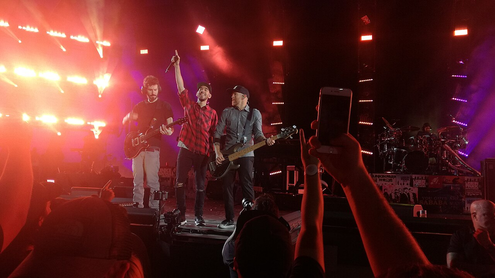
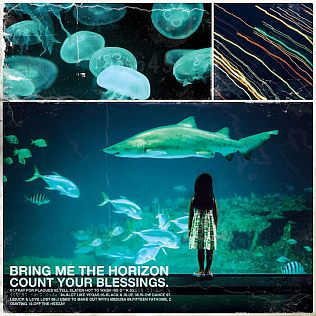
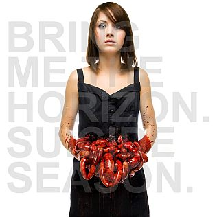
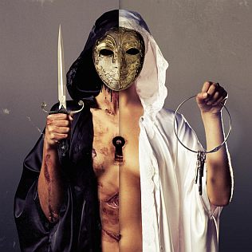
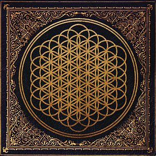
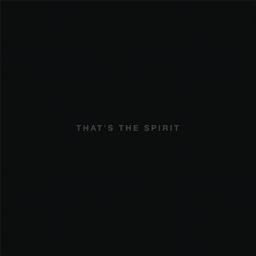
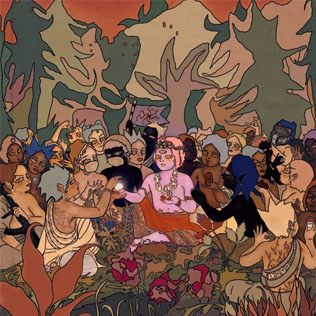
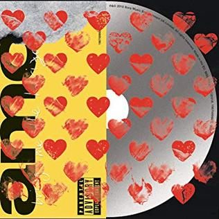
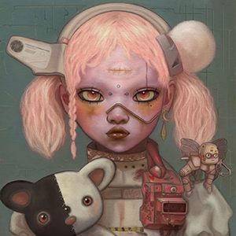
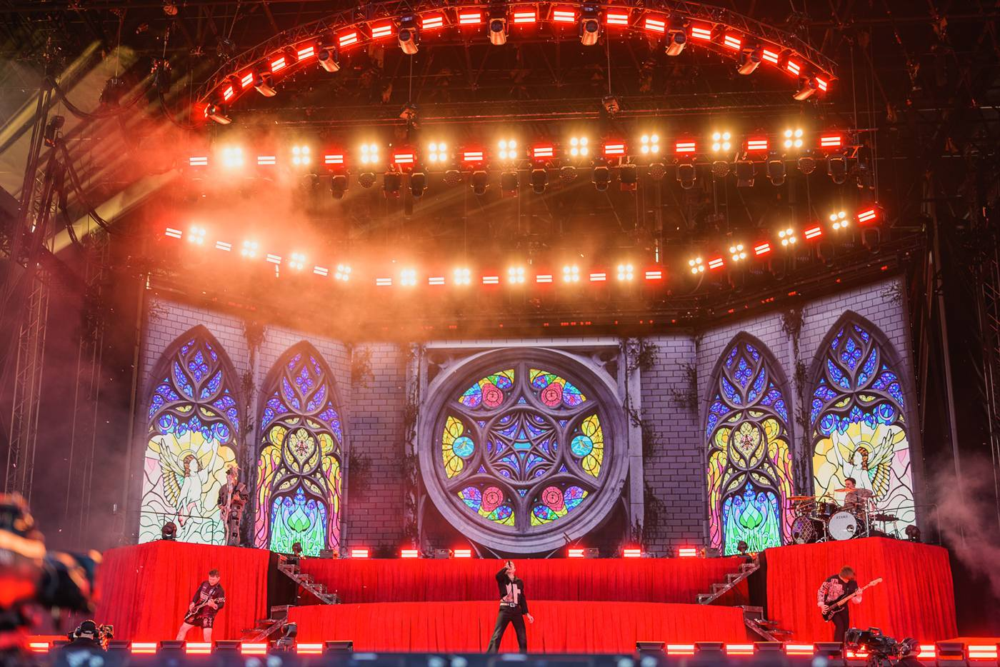

De donde vengo
Crecí con ellos.
Con "ellos" me refiero a Linkin Park. Fue la puerta por la que entré a todo lo demás: si te gusta lo que hacían Chester y Mike Shinoda con las guitarras y las máquinas, Bring Me The Horizon es ese mismo camino pero veinte años después.

Recuerdo haberlos encontrado por una canción. Ya los había escuchado con su canción más popular, que fue "Can You Feel My Heart", pero la primera canción que escuché y por ende los encontré fue, no recuerdo si, "Mantra" o "Lost".
Los álbumes, en orden
Ocho discos y un EP. Los he escuchado todos menos el EP.
-

2006
Count Your Blessings
El debut. Guitarras bajadas, blasts y Oli Sykes gutural de principio a fin. Es lo más pesado de la banda y lo que menos se parece a lo que hacen hoy.
Donde se nota: el arranque agresivo de todo el disco.
-

2008
Suicide Season
Aquí aparece por primera vez la voz limpia cantando estribillos encima del metalcore. Es el disco donde se ve la banda que después serían.
Donde se nota: "Chelsea Smile" y "The Sadness Will Never End".
-
EP
sin carátula2010
Hell: The Sequel
EP con Kellin Quinn de Sleeping With Sirens. Es el único de toda la lista que no he escuchado, así que lo dejo marcado y no opino de él.
Pendiente.
-

2010
There Is a Hell Believe Me I've Seen It. There Is a Heaven Let's Keep It a Secret
El tercero y el más raro de la etapa metalcore: coros, teclados y cambios que no van a ningún lado obvio. Es el puente entre el sonido viejo y Sempiternal.
Donde se nota: "Diamonds Aren't Forever".
-

2013
Sempiternal Mi favorito
El disco que los pasó de banda de metal a banda grande. Tiene las partes más duras que han hecho y a la vez los estribillos más grandes, y habla de adicción y de levantarse.
Donde se nota: "Shadow Moses", "Antivist", "Can You Feel My Heart", "Sleepwalking".
-

2015
That's the Spirit
Soltaron el metalcore casi por completo y hicieron un disco de rock con producción electrónica limpia. Es el más fácil de escuchar de la lista y el que los metió en la radio.
Donde se nota: "Throne", "Happy Song", "Dopamine".
-

2019
amo
El más pop y el más personal a la vez: Oli Sykes lo escribió después de su divorcio. Sintetizadores, coros gospel y canciones de amor desde un lugar bastante oscuro.
Donde se nota: "Mantra", "Wonderful Life", "I Was Born for This".
-

2020
POST HUMAN: Survival Horror
Reúnen los singles del proyecto POST HUMAN. Es el más suelto de todos: cada canción va por su lado, del techno industrial al pop de estadio.
Donde se nota: "Ludens", "Parasite Eve", "Obey".
-

2024
POST HUMAN: NeX GEn
Salió de sorpresa, sin aviso. Mira hacia atrás al nu metal y al post-hardcore de los 2000 pero con la producción de ahora. Es de los que más he repetido, junto a Sempiternal y That's the Spirit.
Donde se nota: "Lost", "Darkside".
-
Sin carátula
todavía2026
Count Your Blessings | Repented
Regrabaron completo el debut y lo sacaron en julio de 2026. No es un disco nuevo, pero está aquí porque muestra que la banda sigue mirando hacia el principio.
Escuchado.
Lo que fue cambiando
Punto por punto, qué se pierde y qué se gana entre la primera etapa y la última.
Voz
Gutural casi todo el tiempo, con alguna línea limpia escondida.
Cantado y gritado en la misma canción, con estribillos y capas de voces.
Guitarras
Riffs graves, breakdowns y afinaciones caídas.
Menos riff y más textura; a veces la guitarra hace lo que antes hacía un sintetizador.
Teclados
Casi nada, solo atmósferas de fondo.
Desde Sempiternal son parte de la canción, no un adorno.
Estructura
Verso, breakdown, verso. La canción termina donde rompe.
Estribillo grande, puente con coros y duración de radio.
Letras
Imágenes oscuras y agresivas, más golpe que historia.
Cosas concretas: rehabilitación, un divorcio, quedarse solo en una habitación.
Por dónde empezar
Si alguien no conoce nada de la banda, le paso tres discos y nada más.
Con Suicide Season se entiende de dónde salieron. Con Sempiternal se entiende por qué siguen siendo importantes. Y con That's the Spirit se entiende por qué llenan festivales.
Verlos en vivo
El escenario de la gira de amo: una iglesia de vitrales proyectada detrás de todo.

Es lo que más me llama la atención de la banda en vivo: el contraste entre una puesta en escena casi religiosa y un cantante que no para quieto. Los vitrales, el rojo y el humo hacen que una canción pop suene pesada igual.
Volver
Esta página es una de mis dos páginas de fan dentro de mi hoja de vida. La otra va de Silent Hill.